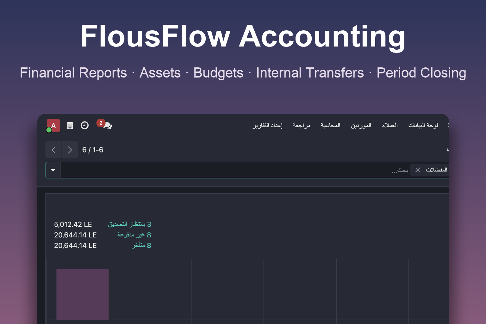
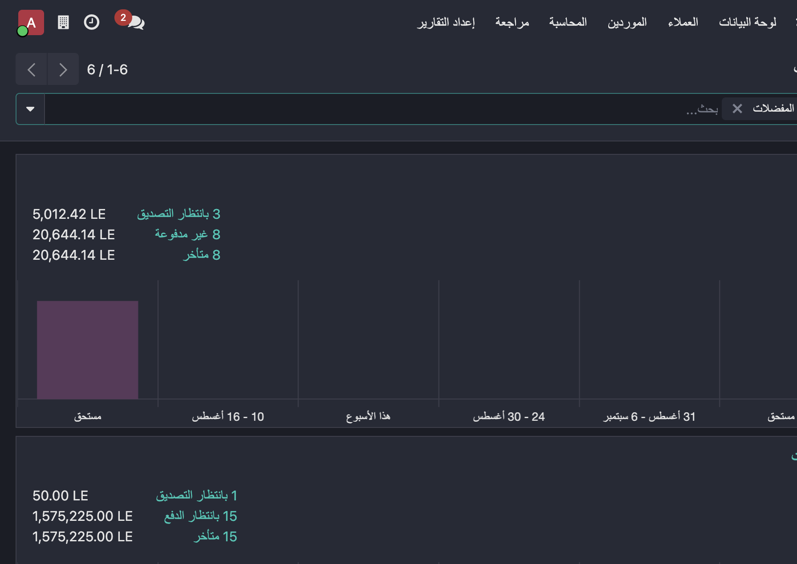
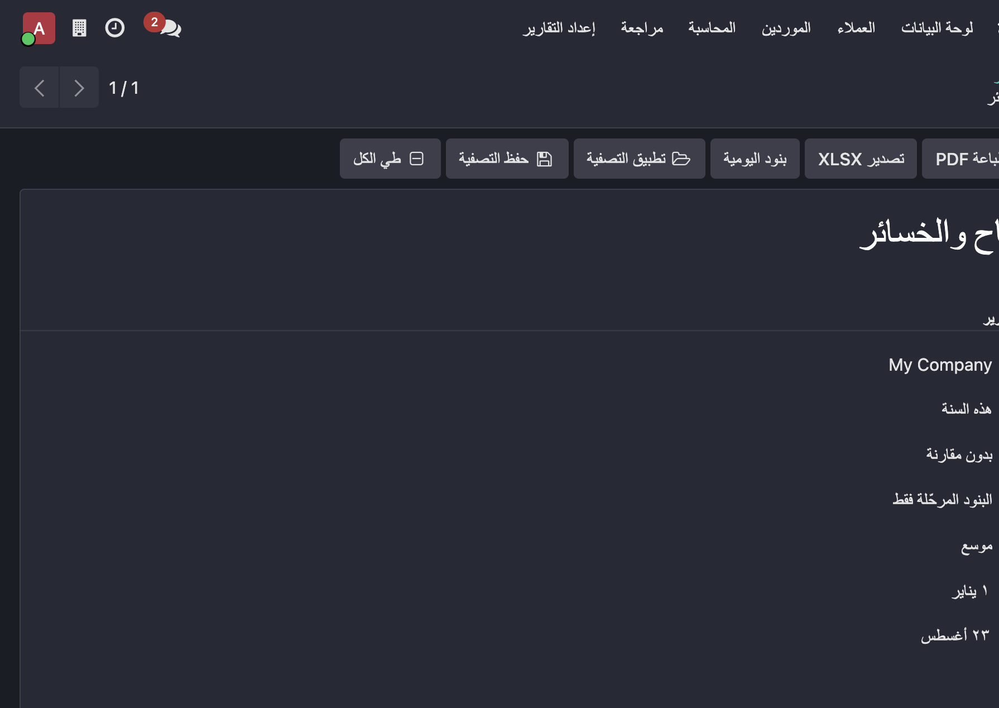
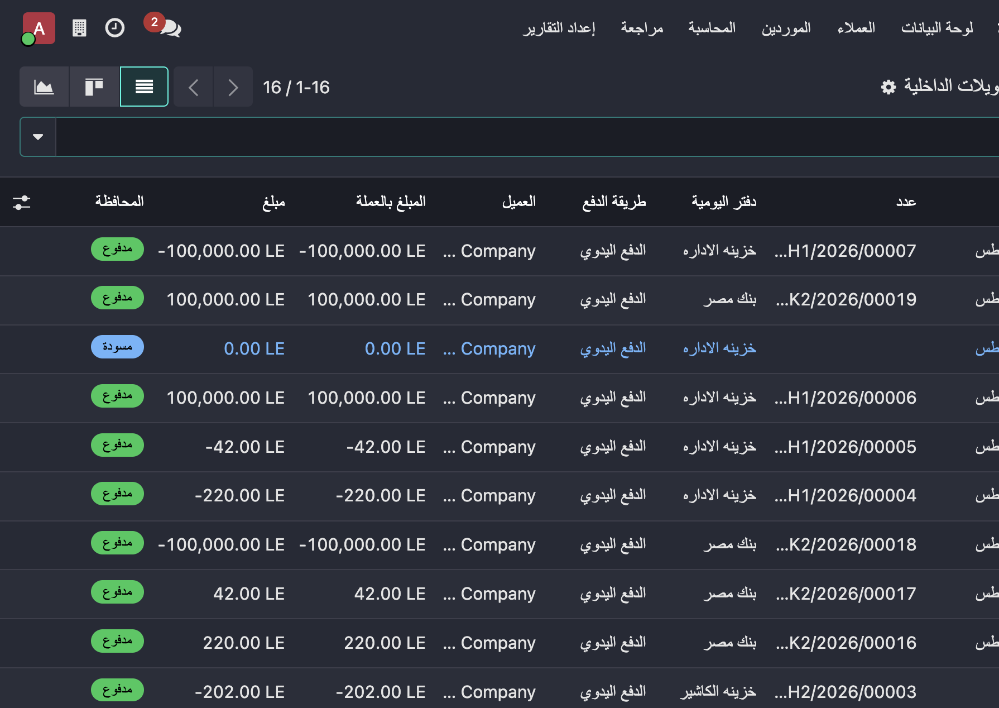
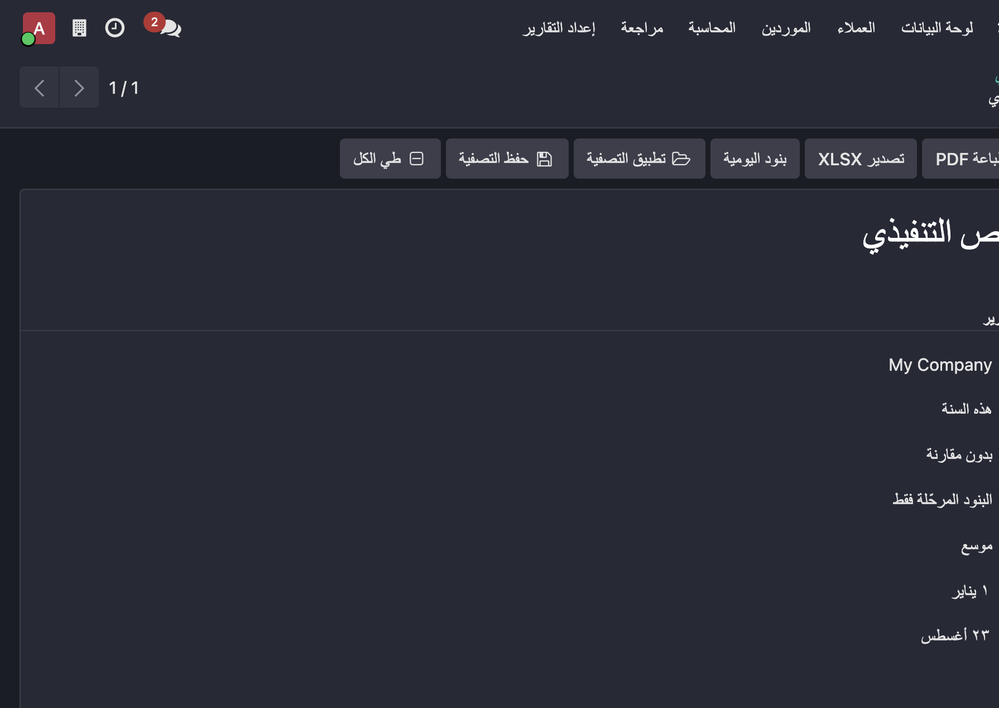

account module. The chart of accounts and taxes load automatically based on the
company's country using the standard account.chart.template engine — exactly like the
standard Odoo accounting app.
Profit & Loss, Balance Sheet, Trial Balance, Cash Flow, General/Partner Ledgers, Customer/Vendor/Account Statements, Executive Summary, Aged Receivable/Payable, Tax and Journal Audit — with drill-down, filters, PDF and XLSX export.
Paired bank ↔ cash transfers. One action creates the two standard Odoo payments linked together, with automatic destination account and safe cancellation of both legs. One-click shortcut on every bank/cash journal dashboard.
Asset models and groups, straight-line / declining / hybrid depreciation, constant or daily prorata, deferred expenses/revenues, multi-currency posting, modifications, partial/full disposal and auditable reversal.
Financial and analytic budget lines with approval states, period boundaries, planned vs actual vs theoretical amounts and sign-aware overrun detection.
Configurable collection levels, overdue partners report, manual or scheduled reminder processing, printable letters, immutable processing history and responsible-user activities.
Month/quarter/year close checklist, draft-entry gate, reviewer approval, audit evidence and controlled application of the standard Odoo lock dates.
Scoped, idempotent schedules with a concurrency-safe daily cron that creates and posts standard Odoo payments with live payment states.
Batch processing of draft payments with accountant submission and manager approval, plus "promise to pay" tracking with kept / broken / cancelled outcomes.
Tax return review with preparation/approval separation, plus a multicurrency revaluation wizard that posts unrealized gain/loss entries per currency and period.




Copy the flousflow_accounting folder into your addons path and install the app
from Apps. The chart of accounts loads automatically:
l10n_* or a Flous localization).flous_generic_coa) loads.License: LGPL-3. Author: Flous Flow — https://flousflow.com